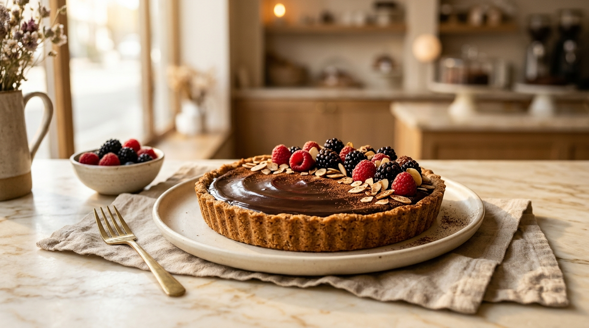
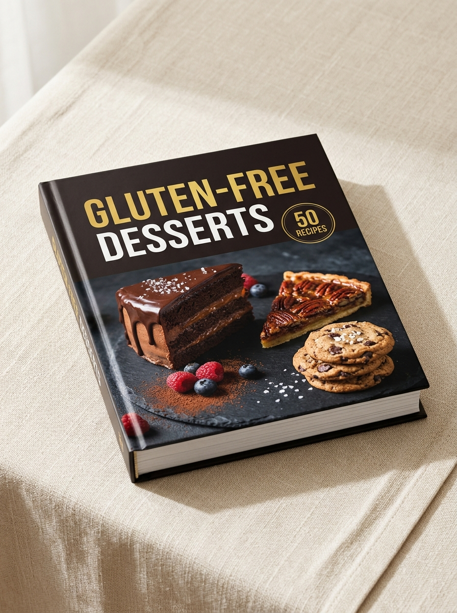

★★★★★
“The Salted Caramel Pecan Brownies are genuinely better than any bakery brownie I’ve ever had. The gram measurements make every gluten-free dessert recipe impossible to mess up.”
Bake flaky pastry crusts, fudgy brownies, and cloud-soft cakes with a foolproof gluten-free dessert recipe tested from the ground up. Try our 4 free recipes below or grab our 50-recipe digital cookbook for just $5.

Dark Chocolate Berry Ganache Tart
Balanced ratios of almond, oat, tapioca, and rice flours tested for bakery texture.
Every gluten-free dessert recipe includes metric gram weights and US cups.
63 full-color pages delivered immediately to your phone, tablet, or printer.
Clear dietary tags and tested plant-based swaps across all 5 chapters.

Only $5 · Instant PDFOur one and only complete 63-page full-color digital cookbook featuring 50 triple-tested gluten-free dessert recipes across 5 chapters—cakes, cookies, brownies, pies, tarts, no-bake treats, and global classics.
Pick any free gluten-free dessert recipe below to view the full ingredients checklist and step-by-step instructions.
Most wheat-to-gluten-free swaps fail because they rely on heavy rice-flour blends and excess gums. Every gluten-free dessert recipe we publish is built from scratch around how whole-ingredient flours absorb moisture, brown, and hold structure.
Whether you are baking a quick weeknight brownie or a birthday cake, matching the right gluten-free flour to the dessert style delivers crisp edges and a tender, non-gritty crumb.
Blanched almond, certified GF oat, buckwheat, and tapioca for natural richness and tender crumb.
Brief batter rests and exact gram weights eliminate grittiness and deliver reliable rise.
“I baked the Lemon Blueberry Ricotta Cake for my mom’s birthday. Nobody had any idea it was gluten-free until I told them—three people bought the $5 ebook before dessert was over.”
A quick cheat sheet from our $5 ebook to help you choose the best flour for every bake.
| Gluten-Free Flour | Best Dessert Uses | Texture & Flavor | Pro Baking Tip |
|---|---|---|---|
| Blanched Almond Flour | Ricotta cakes, tart crusts, cookies | Moist, rich, buttery & tender | Pair with 20% tapioca starch to keep cakes airy. |
| Certified GF Oat Flour | Fudgy brownies, crumbles, muffins | Soft, chewy, lightly sweet | Rest batter 10 minutes so oats hydrate fully. |
| Tapioca / Arrowroot Starch | Sponge cakes, crisp pie crusts, pavlova | Light lift, glossy chew, crisp edges | Never use alone; blend 15–30% with nut or grain flours. |
| Sweet White Rice Flour | Shortbread, mochi brownies, biscuits | Neutral flavor, silky binding | Acts as a natural binder without xanthan gum. |
“The Salted Caramel Pecan Brownies are genuinely better than any bakery brownie I’ve ever had. The gram measurements make every gluten-free dessert recipe impossible to mess up.”
“Only $5 for 50 full-color recipes and a flour troubleshooting chart! My daughter was recently diagnosed with celiac and this book brought joy back to birthdays.”
“Beautiful photography, super clean layout on my iPad, and the dairy-free swaps actually work without making the cakes dense. Already made 12 recipes!”
Click Buy the book — $5 to complete checkout securely inside our website via Payhip. Immediately after payment, you receive a direct download link for the 63-page PDF plus a backup copy by email.
Yes! Every single gluten-free dessert recipe on this site and inside the ebook is 100% wheat- and gluten-free. When oat flour or packaged ingredients are used, we clearly note to choose certified gluten-free labels.
Each recipe is developed from scratch around naturally gluten-free flours like blanched almond flour, oat flour, and tapioca starch—producing crisp edges and moist, tender centers with zero grittiness.
Yes! Our 50-recipe ebook includes a built-in Dietary & Lifestyle Index with 21 naturally gluten-free, 34 nut-free, 30 easily dairy-free, and 12 no-bake desserts.